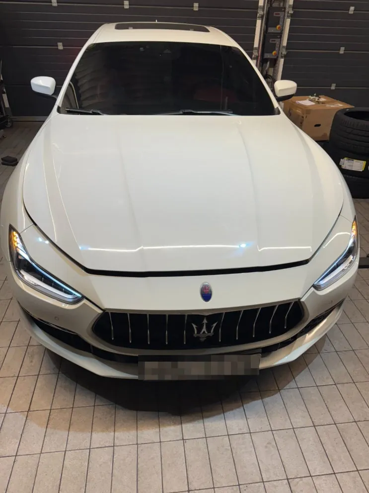
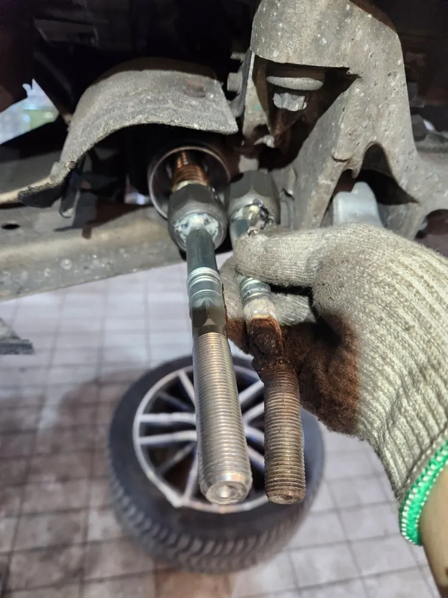
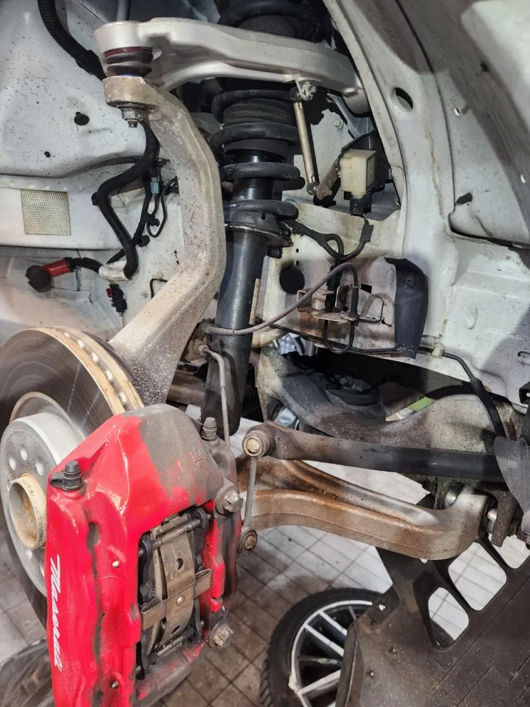
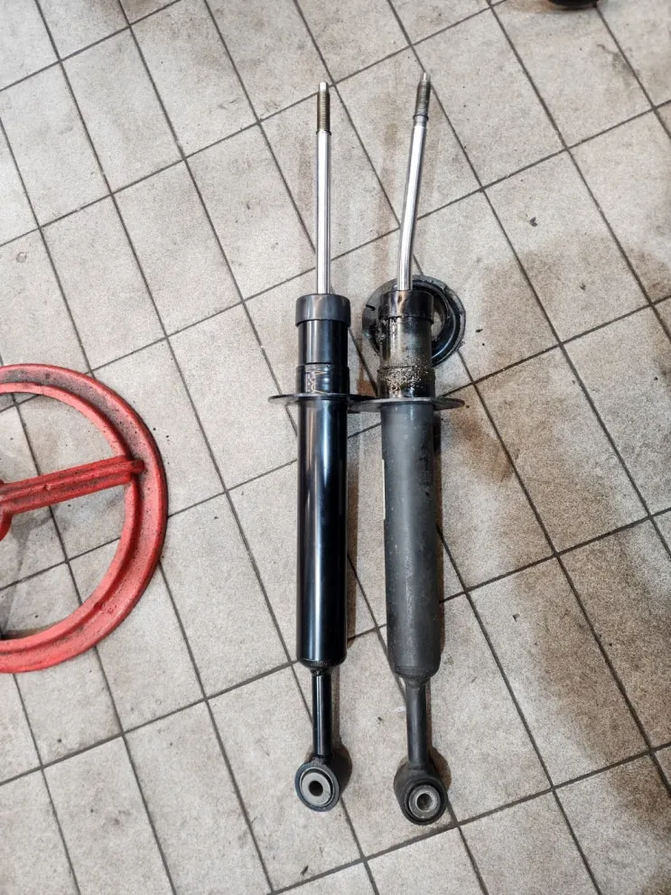
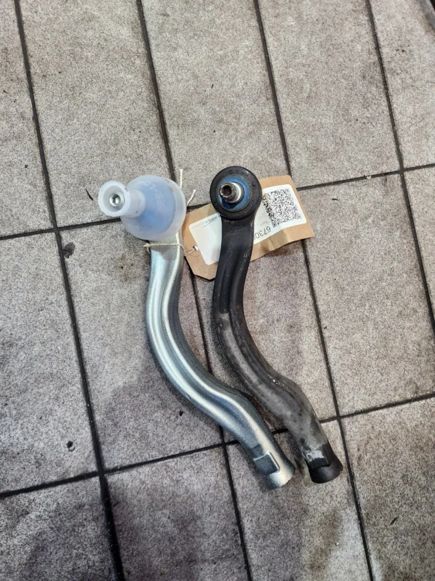
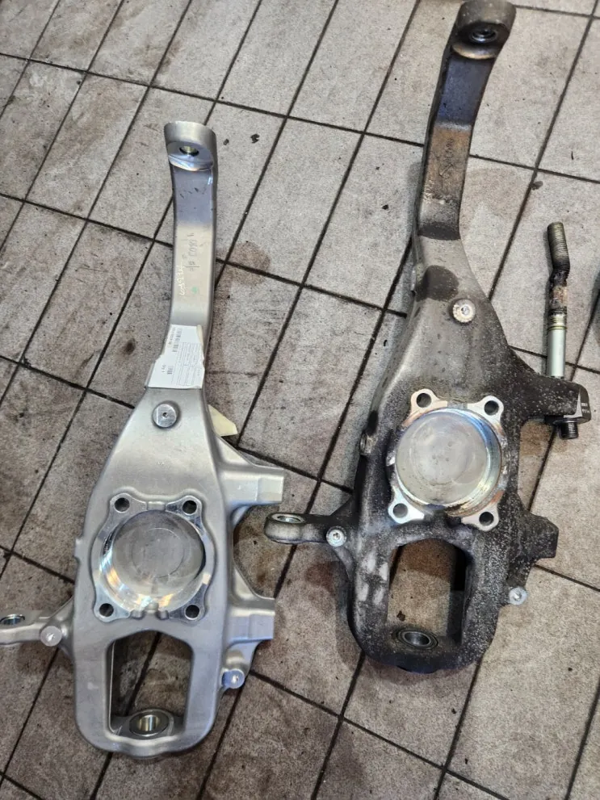
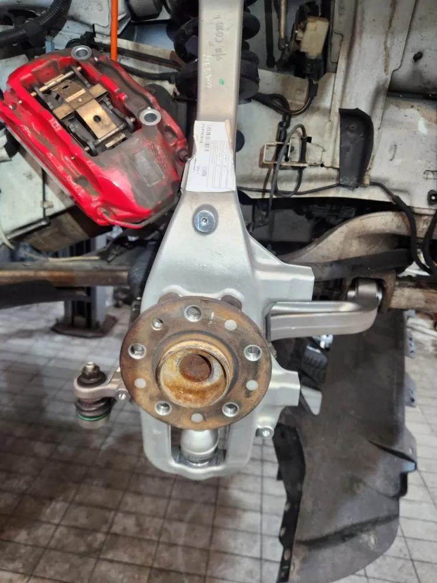
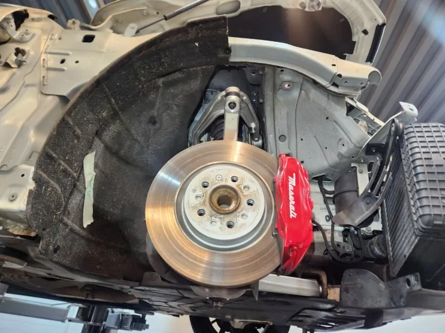

기블리(M157) 운행 중 하체 충격 손상 — 쇼크업소버·로우암·타이로드·너클 교환
At a glance한눈에 보기
- 차량
- 마세라티 기블리
- 증상
- 운행 중 하체 충격, 쇼크업소버 누유·변형, 로우암 휘어짐
- 진단
- 운행 중 충격을 받은 기블리(M157)는 쇼크업소버에 누유와 변형이, 로우암에 휘어짐이 있었습니다. 쇼크업소버, 로우암, 타이로드, 너클을 한 번에 신품으로 교환하고 디스크와 언더커버를 장착한 뒤 마지막 점검을 했습니다.
- 작업
- 입고 차량 4면 사진 기록
- 쇼크업소버 교환
- 로우암 교환
- 타이로드 교환
- 너클 교환
- 디스크·언더커버 장착
- 최종 점검

입고와 점검
운행 중 충격으로 하체가 손상된 기블리(M157)가 입고됐습니다. 노후로 바꾸는 일반 하체 작업과 달리, 이번은 충격으로 상한 부품을 교환하는 작업이었습니다.
로건서비스는 입고하면 차량 네 면을 사진으로 남겨 점검 사항을 기록하고 고객에게 알려 드립니다. 손상 부위를 확인한 뒤 쇼크업소버, 로우암, 타이로드, 너클을 함께 교환하기로 했습니다.


쇼크업소버·로우암 교환
마운트를 풀고 쇼크업소버를 떼어 내 보니 눈으로 봐도 누유와 변형이 있었습니다. 신품 쇼크업소버로 교환했습니다.
로우암은 위쪽에서 충격으로 휘어진 모양이 확인돼 역시 신품으로 바꿨습니다.


타이로드·너클 교환
타이로드는 스티어링 휠과 앞바퀴를 이어 조향이 되게 하는 부품으로, 이번 작업에서 함께 교환했습니다.
마지막으로 브레이크 디스크가 결합되는 너클을 교환했습니다. 너클은 노후로 바꾸는 일이 드문 부품이라, 교환이 필요했다는 것은 충격이 그만큼 컸다는 뜻입니다.


마무리
너클 교환 후 디스크를 다시 장착하고 언더커버까지 조립한 뒤 마지막 점검을 마쳤습니다.
요철이나 방지턱을 세게 지난 뒤 핸들이 한쪽으로 쏠리거나 하체에서 소리가 난다면 점검을 권합니다. 증상과 사진을 카톡으로 먼저 보내 주세요.

자주 묻는 질문
하체에 충격을 받으면 어떤 부품을 보나요?
이번 기블리처럼 쇼크업소버의 누유·변형, 로우암 휘어짐을 먼저 보고, 조향과 연결된 타이로드와 너클 상태도 함께 확인합니다.
이 작업의 원문 기록: 네이버 블로그에서 보기
Consultation
마세라티 기블리, 비슷한 증상이 있나요?
증상 사진이나 경고등 화면을 카톡으로 먼저 보내 주시면 확인 후 안내해 드립니다. 전국 탁송 상담 가능.